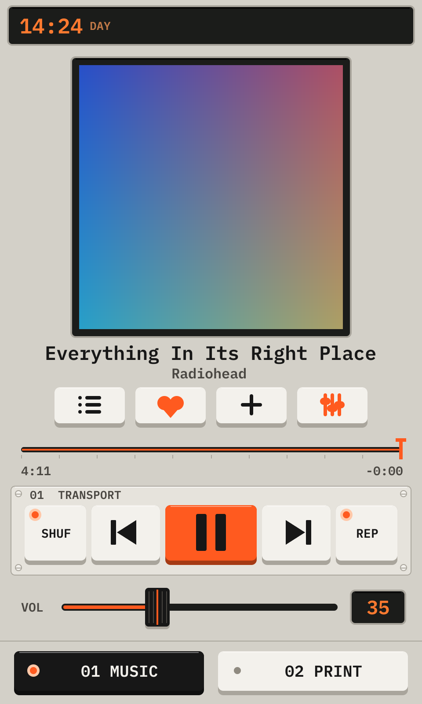
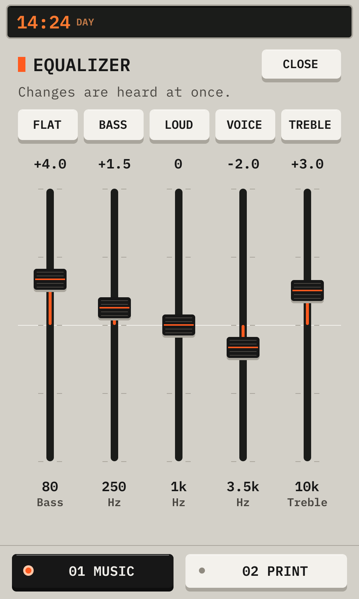

Printdeck is a touch screen for a 3D printer that runs Klipper. It shows the print, controls the printer, and plays music from Spotify on its speakers.
At the first start, the deck makes its password and opens the setup. Connect the deck to your Wi-Fi network there.
The setup: step 1
1NetworksThe Wi-Fi networks near the deck, with the signal. A lock shows a network with a password. Tap a network, then type its password.
2ScanLooks for the networks again. The list also scans by itself.
3HiddenFor a network that does not show its name: type the name and the password.
4NextGoes to the summary when the deck is connected.
The setup: step 2
1AddressThe address of the deck on your network. Open it in a browser for the web pages.
2PasswordThe password of the web pages. To see it again, open Machine > Wi-Fi and help.
3FinishCloses the setup. The deck does not open it again.
You can also set the Wi-Fi before the first start: put the disk in a computer, and fill in printdeck.txt on the PRINTDECK partition.
02The deck
The deck has two tabs, Music and Print. The status bar is at the top of every screen.
The status bar and the tabs
1ClockThe time. Tap it to change the colors: day, night, or auto (night from 20:00 to 7:00).
2The other tabWhat the other tab does: the print and its percent on the Music tab, the song on the Print tab. Tap it to open that tab.
3StopShows while the printer prints or heats. It stops the printer at once, after one question. Klipper must restart after a stop.
4MusicThe Spotify player.
5PrintThe printer.
03Print: the idle screen
When the printer does not print, the Print tab shows the idle screen. The largest key is the action that you need most: Print a file.
The idle screen
1DisplayThe state of the printer, the loaded filament, and the homed axes or the message of the printer (M117). It has the colors of the display of a LulzBot.
2TemperaturesThe nozzle and the bed now. A heater that is on shows its target and an orange icon. Tap a card to set its temperature.
3Print a fileOpens the files. See Files.
4PreheatHeats the nozzle and the bed for the loaded filament.
5Cool downTurns off both heaters.
6Last printThe last print and its result. Reprint starts it again, after a question.
7PagesFilament, Move, Maintenance and Machine. Each page has its own section.
The keypad of a temperature
1ValueThe temperature that you type.
2PresetsOff, and the temperatures of the materials.
3KeysThe digits. C clears the value, DEL removes the last digit.
4SetSets the heater. Cancel closes the keypad with no change.
04Files
The files are the G-code files that the slicer sent, or that you uploaded in the browser. The newest file is at the top.
Each file shows what the slicer wrote into it: the print time, the filament and the layer height. Cura, PrusaSlicer, OrcaSlicer and Bambu Studio write this data. A thumbnail shows when the slicer adds one.
The file list
1CountThe number of files.
2PictureThe thumbnail of the slicer, or the shape of a part.
3FileThe name, the print time, the filament and the layer height.
4DateWhen the file arrived.
Drag the list up and down. Tap a file to open it.
A file
1PictureThe thumbnail of the file.
2Slicer dataThe print time, the filament, the layer height, the temperatures, the slicer and the date.
3PrintStarts the print, after a question.
4DeleteRemoves the file, after a question. The file that prints now cannot be removed.
05Print: during a print
During a print, the Print tab shows the screen of the phase of the print. The deck knows the phase from the printer and from the G-code of the file.
Preparing
1DisplayThe phase and the step.
2StepsThe steps of the start of the print. The step that runs has a lit LED and a bar. A done step has a dot.
3TemperaturesThe heaters.
4Cancel printStops the print, after a question.
The first layer
1Z offsetThe height of the nozzle above its normal height. Watch the first lines while they print.
2− and +− moves the nozzle closer to the bed, + away from it. A line that is too round and thin needs −. A line that is flat and rough needs +.
3StepHow far one tap moves the nozzle, in mm.
4SaveWrites the Z offset into the config of the printer. Save config in Maintenance then writes the file.
5LayerThe first layer of the model.
Printing
1Display, line 1What the printer does, the percent done and the time left.
2Display, line 2The move now and its speed. Every 4 seconds, the time at which the print ends.
3ModelThe model up to the layer that prints now.
4Layer sliderDrag it to look at another layer. Live goes back to the layer that prints.
5ProgressThe percent done, the time since the start, and the filament used.
6TemperaturesTap a card to change its temperature.
7PausePauses the print.
8TuneChanges the print while it runs. See Tune.
9CancelStops the print, after a question.
Tune
1SpeedThe speed of the print, in percent of the speed of the slicer.
2FlowThe amount of plastic, in percent.
3Z offsetThe height of the nozzle during the print.
4FanThe part cooling fan.
5TemperaturesTap a card to change its temperature.
Paused
1WhereThe layer of the pause, and the heaters.
2ResumeContinues the print.
3Change filamentThe guided filament change, for a new color. See Filament.
4Move headOpens Move, to move the head out of the way.
5TuneChanges the print.
6CancelStops the print, after a question.
Done
1ResultDone, Cancelled or Failed, the time and the filament of the print.
2BedThe temperature of the bed. The bar is full when the part comes off easily (35°).
3ReprintPrints the file again.
4DoneCloses this screen.
06Filament
Set the loaded filament here, so that Preheat uses its temperatures. The guided change heats the nozzle, unloads the old filament and loads the new one.
The Filament page
1LoadedThe filament that is in the printer, and its temperatures.
5Extrude, RetractPushes or pulls 10 mm. The nozzle must be at 170° or more.
6Heat, Cool downHeats the nozzle for the loaded filament, or turns the heaters off.
The guided change, step 1
1StepThe step of the change.
2MaterialsThe new filament. The nozzle heats to its temperature, and the deck sets it as the loaded filament.
3Other temperatureA temperature that you type.
4CloseStops the change.
07Move
The Move page
1PositionX, Y and Z of the head. A lit LED shows a homed axis.
2HomeHomes all axes, or one axis. Home after each start of the printer.
3JoystickHold a finger on the pad to move the head in X and Y. The farther from the middle, the faster it moves.
4ZMoves Z up or down by the step: 0.1, 1 or 10 mm.
5Park, Center, Motors offPark moves the head to the back left. Center moves it to the middle of the bed. Motors off lets you move the head by hand.
08Maintenance
Maintenance lists the calibrations that your printer has. The list comes from the config of the printer.
The Maintenance page
1Bed tiltProbes the bed, and corrects its tilt (BED_TILT_CALIBRATE). A printer with a bed mesh shows Bed mesh.
2Probe Z offsetThe paper test for the height of the nozzle (PROBE_CALIBRATE).
3PID tuneHeats the nozzle to 210° and the bed to 60°, and finds the PID settings of each heater (PID_CALIBRATE). Save config then writes them.
4Nozzle changeHeats the nozzle to 250° and raises the head, to change the nozzle.
5Save configWrites the results of the calibrations into printer.cfg. Klipper restarts. Orange text shows unsaved results.
The paper test
1HeightThe height of the nozzle now.
2StepsMoves the nozzle down (−) or up (+), in mm.
3AcceptTakes the height. Save config then writes it.
4AbortStops the test with no change.
This screen shows by itself while Klipper runs a paper test, also when it started from a macro.
09Machine
The Machine page
1InformationThe version of Klipper, the state of the firmware of the board, the network address, and the totals.
2StatisticsThe totals of all prints.
3Print historyEach print, with its result. Tap a print to print it again.
4MacrosThe macros of the printer. Tap one to run it.
5Wi-Fi and helpThe network, the password and the addresses.
6Restart KlipperRestarts the Klipper host, which reads printer.cfg again.
7Firmware restartRestarts the firmware of the board, for example after a stop.
Statistics
1TotalsThe number of prints, the success rate, the print time and the filament.
2ResultsDone (amber), cancelled and failed (red).
3DetailsThe filament in grams (for 1.75 mm PLA), the average and the longest print, the prints of the last 7 and 30 days, and the file that you print most.
10Music
The deck is a Spotify Connect speaker. Choose Printdeck in the Spotify app, or play a playlist on the deck.
The player

1CoverThe cover of the song. Swipe it to the left for the next song, to the right for the previous one.
2PlaylistsYour playlists. Tap one to play it.
3LikeAdds the song to your Liked Songs, or removes it.
4AddAdds the song to a playlist.
5EqualizerThe sound. See below.
6PositionDrag it to go to another part of the song.
7TransportShuffle, previous, play or pause, next, repeat.
8VolumeDrag it. The Spotify app shows the same volume.
The equalizer

1PresetsFlat, Bass, Loud (for a low volume), Voice and Treble.
2BandsDrag a band up to boost it, down to cut it. You hear the change at once.
Link Spotify
1QR codeScan it with your phone, and log in to Spotify. The deck needs the client ID of a Spotify app in printdeck.txt.
11The deck in the browser
Open http://printdeck.local in a browser on the same network, and log in with the password of the deck. The browser shows the same screens as the touch screen, sharp at the pixel density of the phone. Each browser has its own screens, so you can use Music on the phone while the deck shows the print.
On a phone, use Add to Home Screen: the deck then opens as an app, with no browser bars.
The page http://printdeck.local/system shows the version, the services, the logs and the API key for slicers. It also installs an update: choose the update file, then Install. The deck writes the other system slot and restarts into it. If the new system does not start, the deck goes back to the old one.
12The display of the printer
When the printer has a display, it shows what the deck shows: the step of a filament change, the paper test, the page that is open, or the state of the print. The rows below show the temperatures, the print time and the progress. During a filament change or while the printer heats, the bottom row shows an animation.
PRINTING 42%
END 15:47 1:23
~210° 01:15
~60° ▓▓▓▓░░
During a print
FILAMENT SWAP
INSERT, LOAD
~240°
> > > >
Filament goes in
READY PLA
XYZ HOMED
~24°
~23°
Idle
13Slicers
The deck answers the OctoPrint API that slicers use to send files and to start prints.
In Cura, add the deck with the OctoPrint Connection plugin. The deck asks "Allow Cura to use the Printdeck?". Tap Allow.
In OrcaSlicer or PrusaSlicer, add a printer of the type OctoPrint with the address http://printdeck.local, and the API key of the system page.
14Settings
The file printdeck.txt on the PRINTDECK partition holds the settings. Put the disk in a computer to change it. The deck reads it at each start, then clears the Wi-Fi password in it.
wifi_ssid, wifi_password, wifi_country
The Wi-Fi network
spotify_client_id
The client ID of your Spotify app
hostname, timezone
The name on the network, and the time zone
display_rotate
90 or 270 for a display that is mounted in portrait
touch_invert_x, touch_invert_y, touch_swap_xy
1 turns an axis of the touch screen
max_volume
The highest volume, in percent
preheat_tool, preheat_bed
The temperatures of Preheat with no filament set
night_from, night_to
The hours of the night colors
printer.cfg (a file)
A Klipper config. The deck takes it at the next start.
15Problems
No printer yet
1BoardThe board that the deck found on USB, its MCU, and its Klipper firmware.
2Search againLooks for the board again, for example after you connect the printer.
3Next stepCopy printer.cfg to the PRINTDECK partition, and start the deck again.
A Klipper error
1MessageWhat Klipper reports, with all its lines.
2Restart KlipperRestarts Klipper. It reads printer.cfg again.